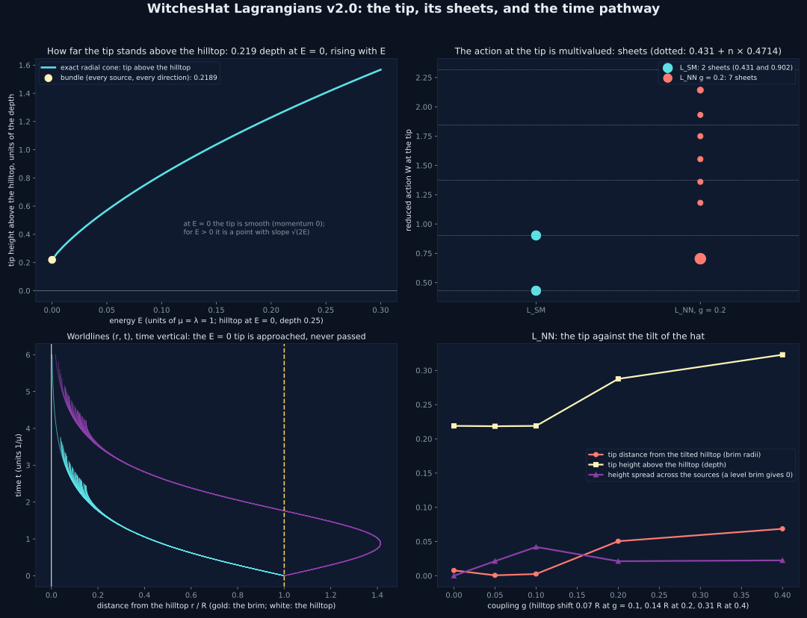

The Lagrangians on the Mexican hat, v2.0
What the maths says, drawn exactly: the bundle of paths from every point of the brim in every direction, kept by what each path does. Brim gold, hilltop white, tip pale yellow.
WitchesHat_Lagrangians_v2.0_L_IO

WitchesHat_Lagrangians_v2.0_L_NN

WitchesHat_Lagrangians_v2.0_L_SM

WitchesHat_Lagrangians_v2.0_L_dynamic_original

WitchesHat_Lagrangians_v2.0_tip_and_time
